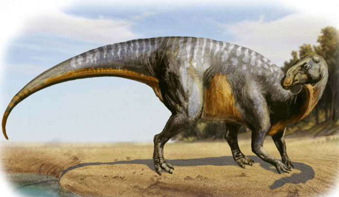

- Большой, Зверь, Без мировоззрения
- Класс доспеха: 11 (природный доспех)
- Хиты: 19 (3d10 + 3)
- Скорость: 40 фт.
-
СИЛ 15 (+2)ЛОВ 10 (0)ТЕЛ 13 (+1)ИНТ 2 (-4)МДР 10 (0)ХАР 5 (-3)
- Навыки: Внимательность +2
- Чувства: Пассивная внимательность 12
- Опасность: 1/4 - 50 оп.
- Источник: «Volo’s guide to monsters»

Действия
- Хвост. Рукопашная атака оружием: +4 к попаданию, досягаемость 5 фт., одна цель. Попадание: 7 (1d10 + 2) дробящего урона.
Описание
Гадрозавр – это четвероногое травоядное, ходящее на двух ногах, которое можно узнать по костяному гребню на голове. Если выращивать их с детства, то их можно обучить перевозке Маленьких или Средних всадников.